11 Graph Connectivity
11.1 Connected and Disconnected Graphs
Look at the graph shown in Figure 10.1 (in the previous lesson) again. Are there any disconnected pairs of nodes in the graph? The answer is no. If you pick any pair of nodes, they are either directly connected or indirectly connected to one another via a path of some length. So, how can we disconnect two nodes in a simple undirected graph? The answer is that there has to be some kind of “gap” splitting the graph into two or more pieces, so that some set of nodes can no longer reach some of the other ones.
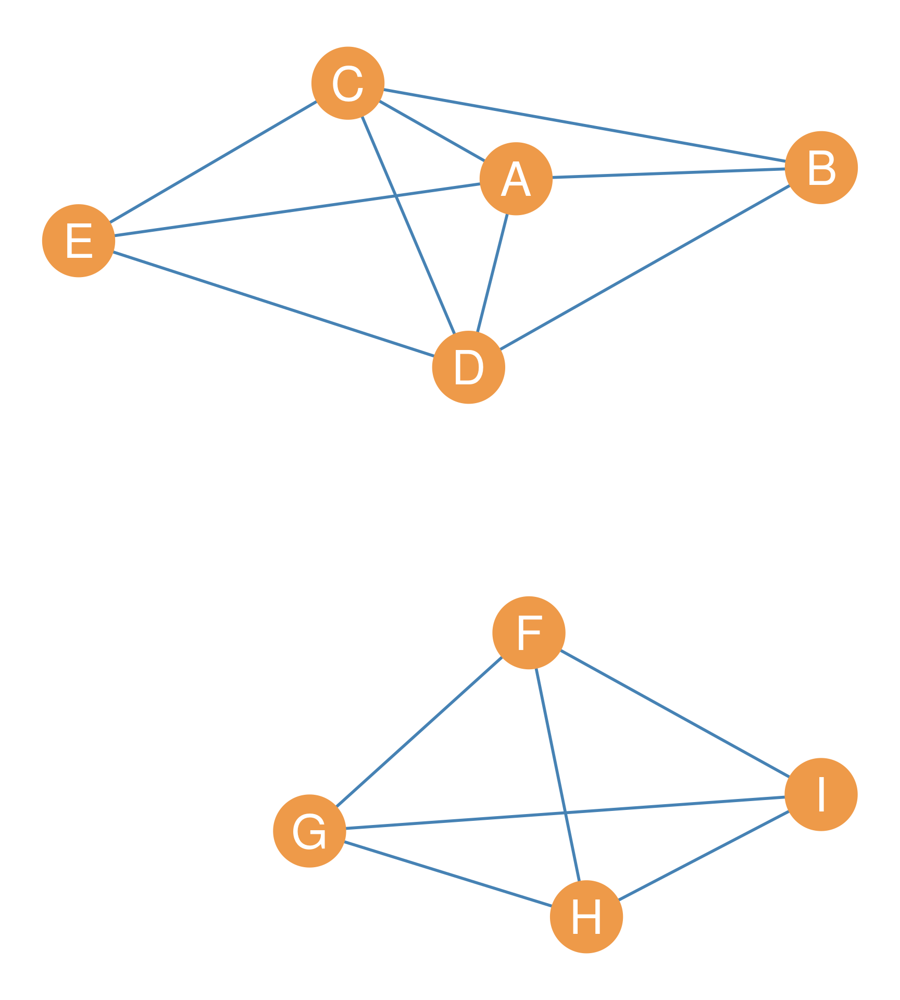
For instance, if you compare the undirected graphs Figure 11.1 (a) and Figure 11.1 (b) you can appreciate the difference between a connected graph and a disconnected graph. The difference between Figure 11.1 (a) and Figure 11.1 (b) is that the Figure 11.1 (b) graph is a subgraph of the Figure 11.1 (a) graph, in which the \(DF\) edge has been removed (an edge-deleted subgraph according to what we discussed in Section 5.9): \(G(b) = G(a) - DF\).
When we remove the \(DF\) edge the resulting graph \(G(b)\) is now disconnected. There is no way we can trace a path connecting any of the vertices in the \(\{F, G, H, I\}\) subset with any of the vertices in the \(\{A, B, C, D, E\}\) subset. This is different from Figure 11.1 (a), where we can trace a finite path between any two vertices, even if it is very long.
Thus, we can come up with a formal definition of graph connectivity:
A graph is connected if there exists a (finite) path between each pair of nodes.
A graph is disconnected if there does not exist a path connecting every pair of nodes.
Note that a graph is disconnected even if there is just one pair of nodes that cannot reach each other. In Figure 11.1 (b), for instance, the graph is disconnected because there is no path connecting any node in the \(\{F, G, H, I\}\) subset to any node in the \(\{A, B, C, D, E\}\) subset.
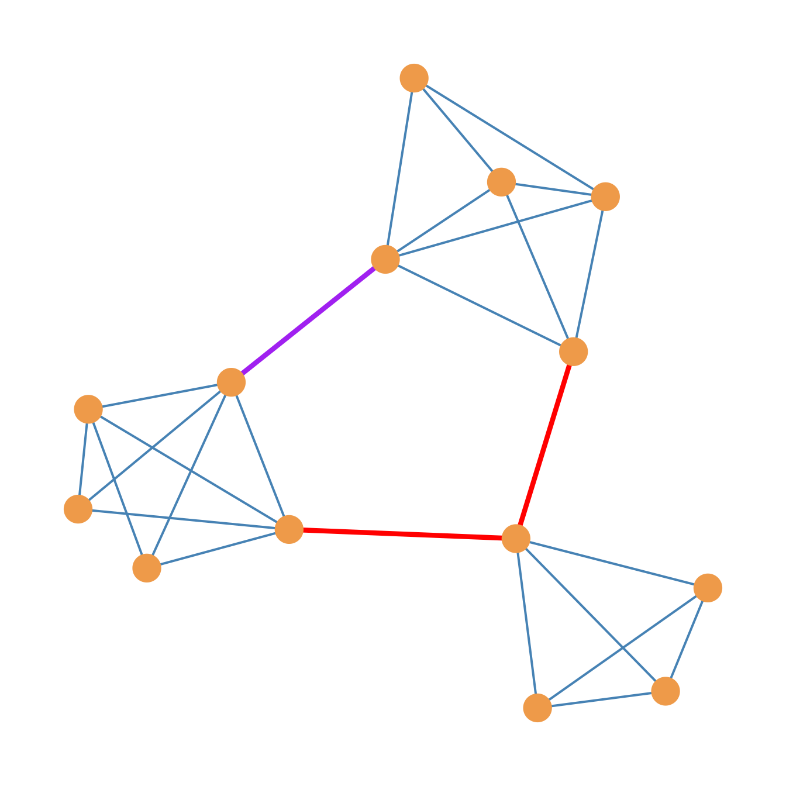
11.2 Components and the Giant Component
When a graph goes from connected (like Figure 11.1 (a)) to disconnected (like Figure 11.1 (b)), it is split into a number of subgraphs that are themselves connected. The pairs of nodes inside the subgraph can reach one another, but they can’t reach the nodes outside the subgraph.
For instance, in Figure 11.1 (b), the set of nodes \(\{A, B, C, D, E\}\) forms a connected subgraph of the larger disconnected graph. A connected subgraph within a larger disconnected graph is called a component of the larger graph. Disconnected graphs, by definition, have multiple components, with the smallest number of components being two.
For instance, in Figure 11.1 (b), there are two components, one formed by the connected subgraph with node set \(\{A, B, C, D, E\}\), and the other formed by the connected subgraph with node set \(\{F, G, H, I\}\).
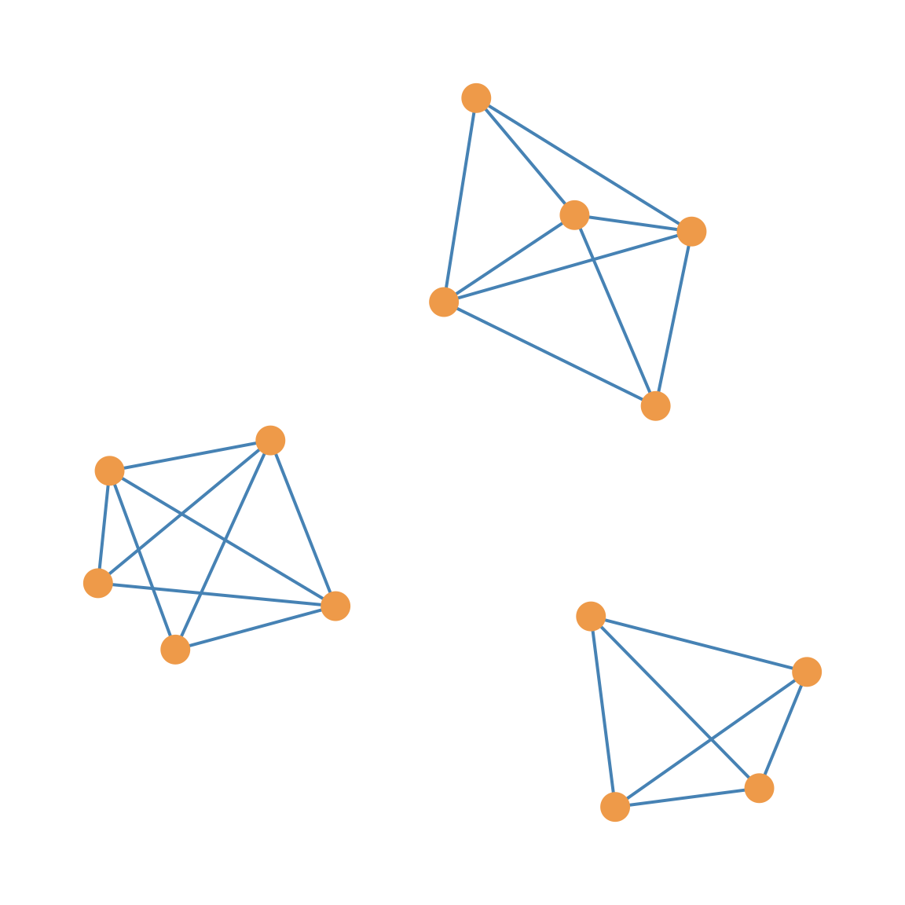
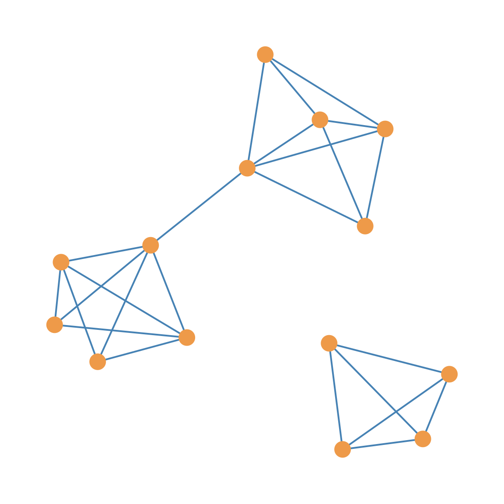
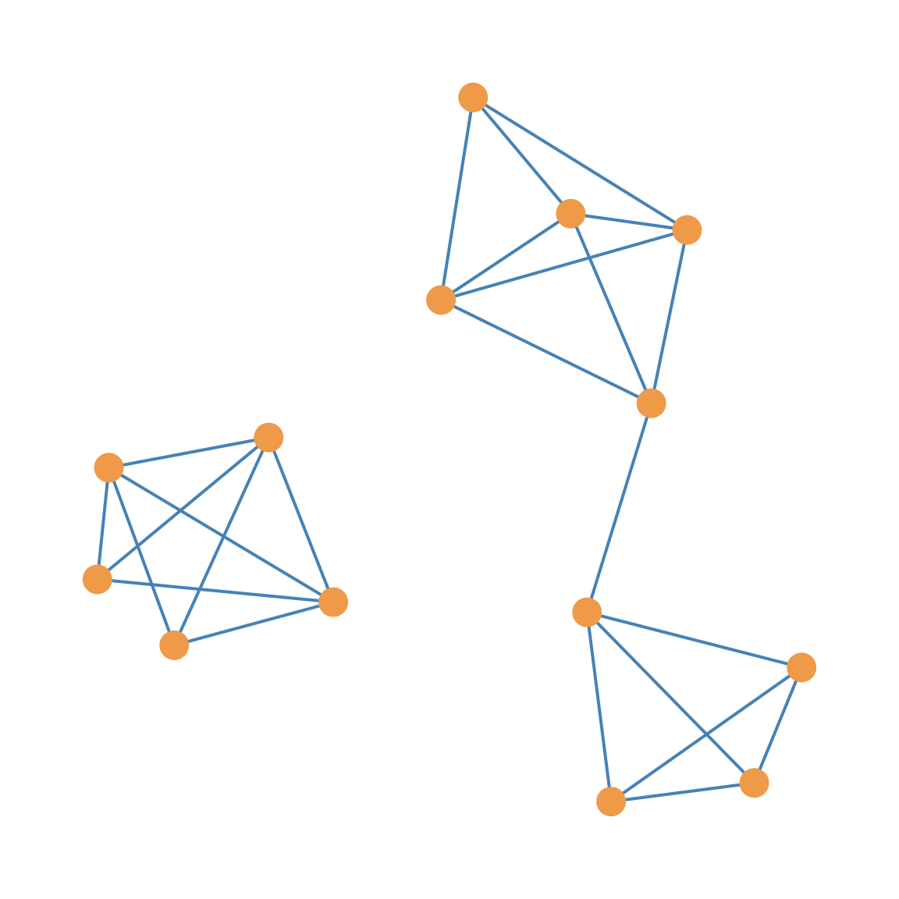
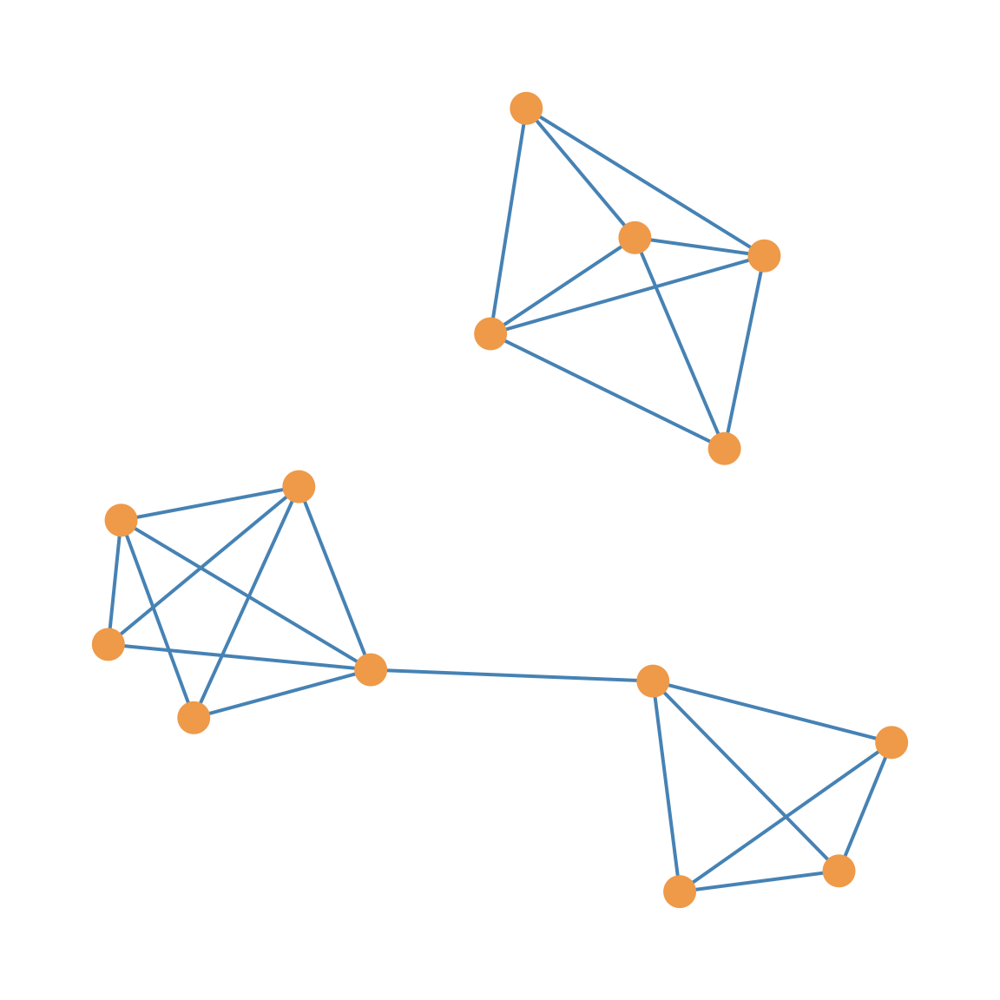
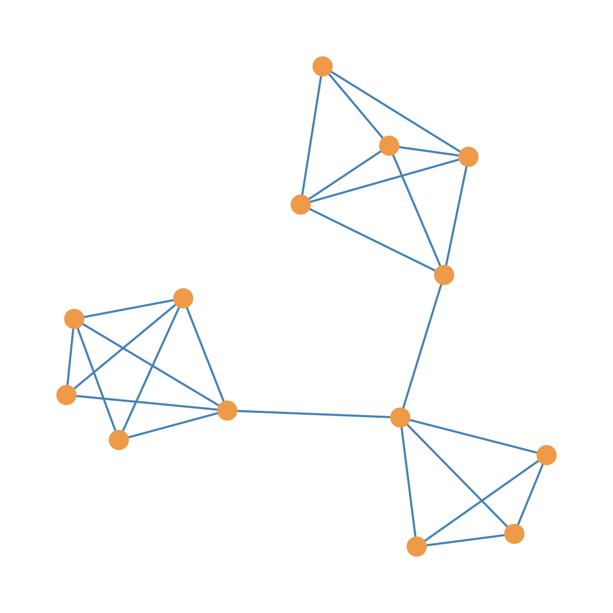
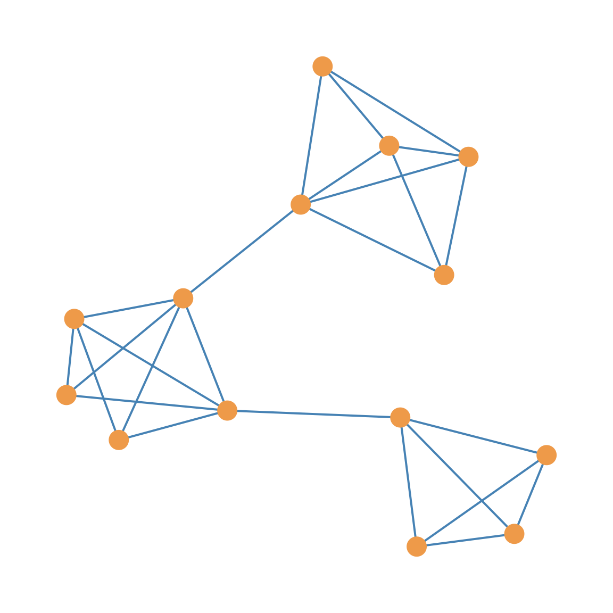
As we noted, it is possible to split a graph into multiple components, not just two. For instance, take a look at the unlabeled graph (see Chapter 5 for the distinction between unlabeled and labeled graphs) in Figure 11.2. If we were to generate a subgraph from Figure 11.2 by deleting the two red edges and the one purple edge, we would end up with the graph shown in Figure 11.3 (a). This graph is disconnected, and it features three separate components (connected subgraphs).
If we were to delete just the red edges from Figure 11.2 and keep the purple edge, we would end up with the graph shown in Figure 11.3 (b). Like Figure 11.3 (a), Figure 11.3 (b) is also disconnected, but it is split into two components, not three.
Note that one of the connected components in the graphs shown in Figure 11.3 (b), Figure 11.3 (c), and Figure 11.3 (d) is way larger than the other one. For instance, the larger connected component of the graph in Figure 11.3 (b) is of order 10, but the smaller component is only of order 4.
When a disconnected graph is split into multiple components, the component containing the largest number of nodes (the largest connected subgraph) is called the graph’s giant component. In Figure 11.3 (c) and Figure 11.3 (d), the giant component is the one with 9 nodes, while the smaller component has 5 nodes.
11.3 Edge Connectivity
We went from the connected graph shown in Figure 11.2 to the disconnected graphs in Figure 11.3 by removing specific edges, such as the red and purple ones in Figure 11.2.
These edges are clearly more important than the other edges colored blue in the graph, because they are responsible for keeping the whole graph together as a connected structure. Obviously, this property of edges has a name in graph theory.
In a graph, an edge cutset is any set of edges whose removal results in a graph going from being connected to disconnected.
For instance, in Figure 11.2 the set of two red edges is a cutset of the graph \(G\) since deleting these edges would disconnect the graph as shown in Figure 11.3 (b). In the same way, we can see that a subset that combines any one of the red edges with the purple edge is also a cutset of the graph in Figure 11.2, because removing any combination of these two links results in a disconnected graph, as shown in Figure 11.3 (c) and Figure 11.3 (d).
Generally, choosing a larger edge cutset results in more disconnected components. For instance, selecting both the red edges and the purple edge—a cutset of cardinality three—as the cutset results in a graph with three disconnected components, as in Figure 11.3 (a).
A minimum edge cutset of a graph is any edge cutset that also happens to be of the smallest size (in terms of cardinality) among all the possible cutsets. The cardinality of the minimum edge cutset in the graph is called the graph’s edge connectivity, and it is written \(\lambda(G)\).
The graph in Figure 11.2 has edge-connectivity \(\lambda(G) = 2\) because we need to remove at least two edges to disconnect it. As we saw earlier, these could be either the set of the two red edges or any combination that includes one of the red edges with the purple one.
When a graph has edge-connectivity larger than one, like Figure 11.2, it means that we could remove any one edge and the graph would still be connected.
For instance, looking at Figure 11.2, if we were to remove just the purple edge, the graph would still be connected and look like Figure 11.3 (e), which is a connected graph.
The same would happen if we removed just one of the red edges from Figure 11.2. If we were to do that, we would end up with the graph shown in Figure 11.3 (f), which is still connected.
11.3.1 Bridges
As you might imagine, the smallest edge connectivity a connected graph can have is \(\lambda(G) = 1\). A graph with edge-connectivity 1 has a special edge called a bridge. This is the single edge whose removal disconnects a graph with edge-connectivity equal to 1.
For instance, in Figure 11.1 (a), the \(DF\) edge is a bridge. When a graph is like the one shown in Figure 11.1 (a) and has a bridge (such as \(DF\)), that edge has two interesting properties (Buckley and Harary 1990, 17).
- First, if an edge is a bridge in graph \(G\), then that edge does not lie on any cycle of \(G\) (as defined in Chapter 10). That means that \(DF\) in Figure 11.1 (a) does not lie on any cycle of \(G\).
- Second, if an edge is a bridge, then there is at least one pair of nodes i and j such that the bridge is an edge on every path linking i and j. In Figure 11.1 (a), clearly condition (2) is the case for every node in the subset \(\{F, G, H, I\}\) relative to nodes in the subset \(\{A, B, C, D, E\}\). Every path linking nodes in the first subset to nodes in the second subset has to include the bridge \(DF\).
11.4 Node Connectivity
As you recall from Section 5.9, we can create subgraphs by removing either edges or nodes. In the same way, we can make a graph disconnected by removing either edges or nodes. In Section 11.3, we considered the case of removing edges to disconnect a graph. Here, we consider the case of removing nodes.
In a graph, a node cutset is any set of nodes whose removal results in a graph going from being connected to disconnected.
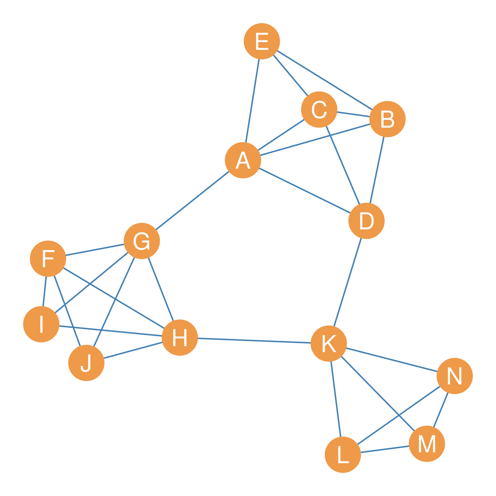
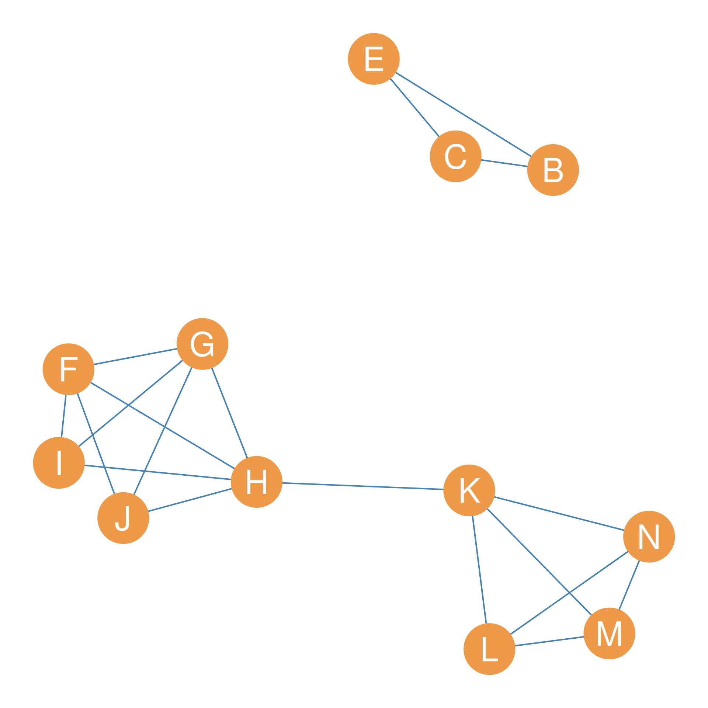
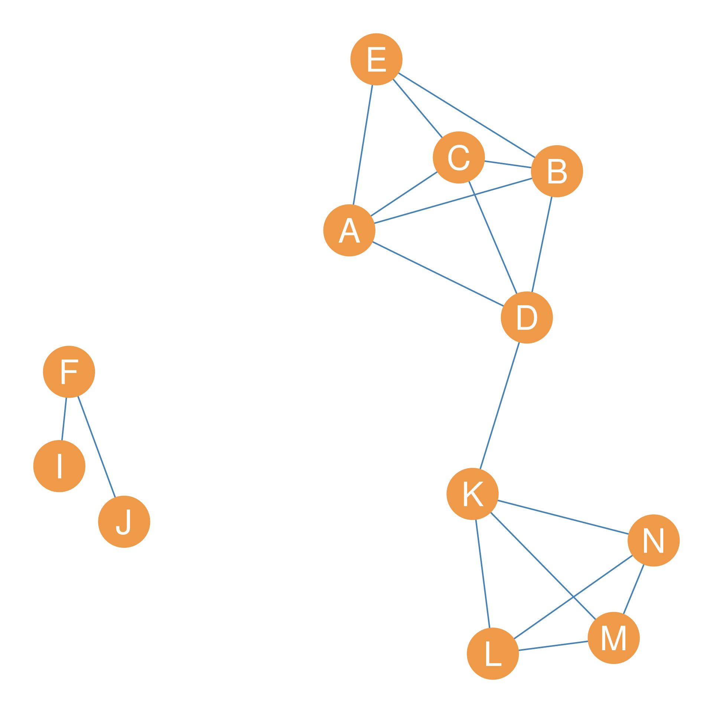
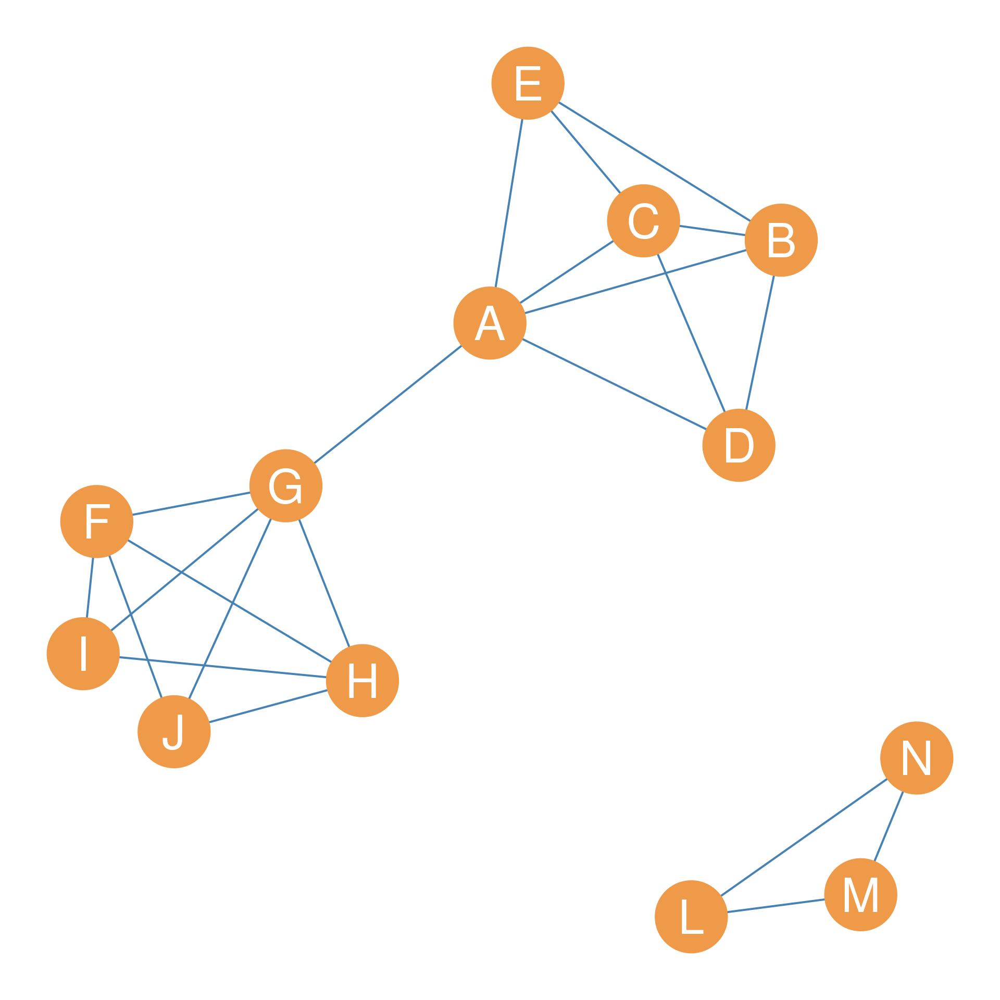
Figure 11.4 (a) shows a graph that is the same as the one in Figure 11.2, except that the nodes are labeled. In that graph, the set of nodes \(\{A, D\}\) is a cutset of the graph \(G\) since deleting these nodes disconnects the graph, as shown by the resulting node-deleted subgraph shown in Figure 11.4 (b). This graph is now disconnected, featuring a nine-node giant component and a smaller three-node component containing nodes \(\{B, C, E\}\)
In the same way, we can see that the set of nodes \(\{G, H\}\) is also a cutset of the graph, because removing these nodes would separate \(\{F, I, J\}\) from the rest of their friends, creating a graph with two separate components, as shown in Figure 11.4 (c).
Interestingly, the set formed by the single node \(K\) is also a cutset of the graph. As shown in Figure 11.4 (d), removing this one node disconnects the graph, separating \(\{L, M, N\}\) from the rest.
A minimum node cutset of a graph is any node cutset that also happens to be of the smallest size (in terms of cardinality). The cardinality of the minimum node cutset in the graph is called the graph’s node connectivity, and it is written \(\kappa(G)\).
The graph in Figure 11.4 (a) has node-connectivity (\(\kappa(G) = 1\)) because, as we have seen, all we need to do is remove \(K\) to disconnect it.
11.4.1 Articulation (Cut)Nodes
If a graph has a single node whose removal disconnects the graph, then that node is called the articulation node of the graph (also called a cutnode). The articulation node is the node equivalent of what a bridge is for edges. A single actor upon whom the entire connectivity of the network depends.
If a graph \(G\) has an articulation node, then by definition \(\kappa(G) = 1\). Any graph \(G\) with \(\kappa(G) > 1\), therefore, lacks an articulation node. It follows from this that if a graph has node-connectivity larger than one (\(\kappa(G) > 1\)), we could remove any one node and the graph would still be connected.
Articulation nodes have another interesting property related to indirect connectivity. If a graph has an articulation node u, there is at least one other node in the graph v such that u stands in the middle of every path (as an inner node) connecting v to the rest of the other nodes in the graph.
Finally, if a node in a graph has degree \(k = 1\) (that is, the node is an end-node), then it cannot be an articulation node. We can always remove an end-node from a connected graph, and the graph will stay connected.
The larger the graph connectivity (\(\kappa(G)\)) of a graph, the larger is the structural cohesion of the underlying social network represented by the graph (White and Harary 2001).
11.4.2 Graph Connectivity and Minimum Degree
An interesting mathematical relationship obtains between three graph properties: Minimum Degree (covered in Section 8.5) and the edge and node connectivities.
It goes as follows: In every graph the node connectivity is always smaller or equal to the edge connectivity, which is always smaller or equal to the minimum degree (Harary 1969, 43).
In mathese, for any graph \(G\):
\[ \kappa(G) \leq \lambda(G) \leq min(k) \tag{11.1}\]
Neat! These can be interpreted as three criteria that indicate how well-connected a whole graph, a subgraph, or a component of a larger graph is. Having a high minimum degree is the weakest, followed by high edge-connectivity, with high node-connectivity being the strongest criterion.
11.5 Local Bridges
In a classic paper on “The Strength of Weak Ties,” Mark Granovetter (1973) developed the concept of a local bridge. Recall from section Section 11.3.1 that a bridge is an edge that, if removed, would completely disconnect the graph.
Another way of thinking about this is that a bridge is an edge that, if removed, would increase the length of the shortest paths between two sets of nodes from a particular number to infinity since, in a disconnected graph, the length of the path between nodes that cannot reach one another is indeed infinity! (\(\infty\)).
There is another way to think about bridges in the context of shortest paths: ask what happens to the indirect connectivity between particular pairs of nodes in the graph when a specific edge is removed. Clearly, every time we remove an edge, this affects the indirect connectivity between a pair of nodes, for instance, by increasing their geodesic distance (the length of the shortest path linking them).
So even if a graph remains connected after removing an edge (because its edge-connectivity is greater than 1), removing that edge can affect how close two nodes in the network are. That is what the concept of a local bridge is intended to capture.
Formally, a local bridge is an edge that, if removed from the graph, would increase the length of the shortest path between a particular pair of nodes to a number that is higher than their current one but less than infinity. This number is called the degree of the local bridge in question. Because a local bridge is always defined with respect to a particular pair of nodes, it is a triplet, involving two nodes i and j and one edge uv.
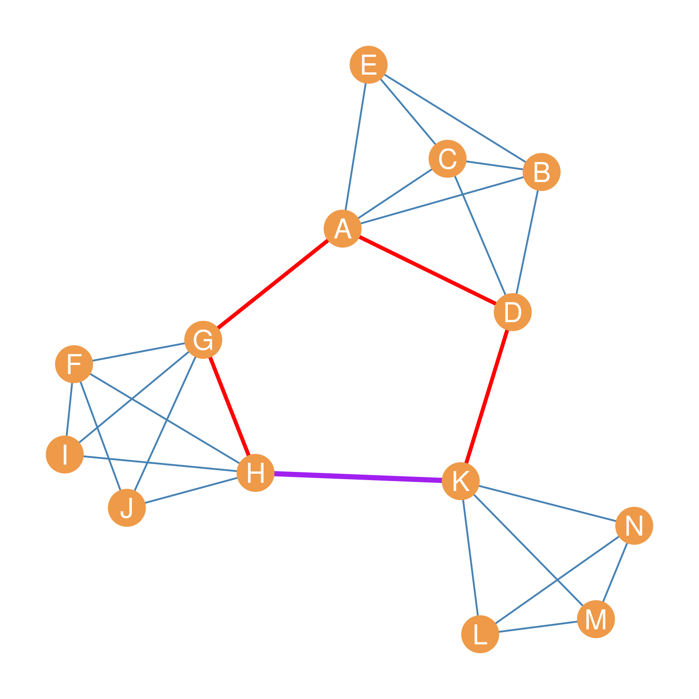
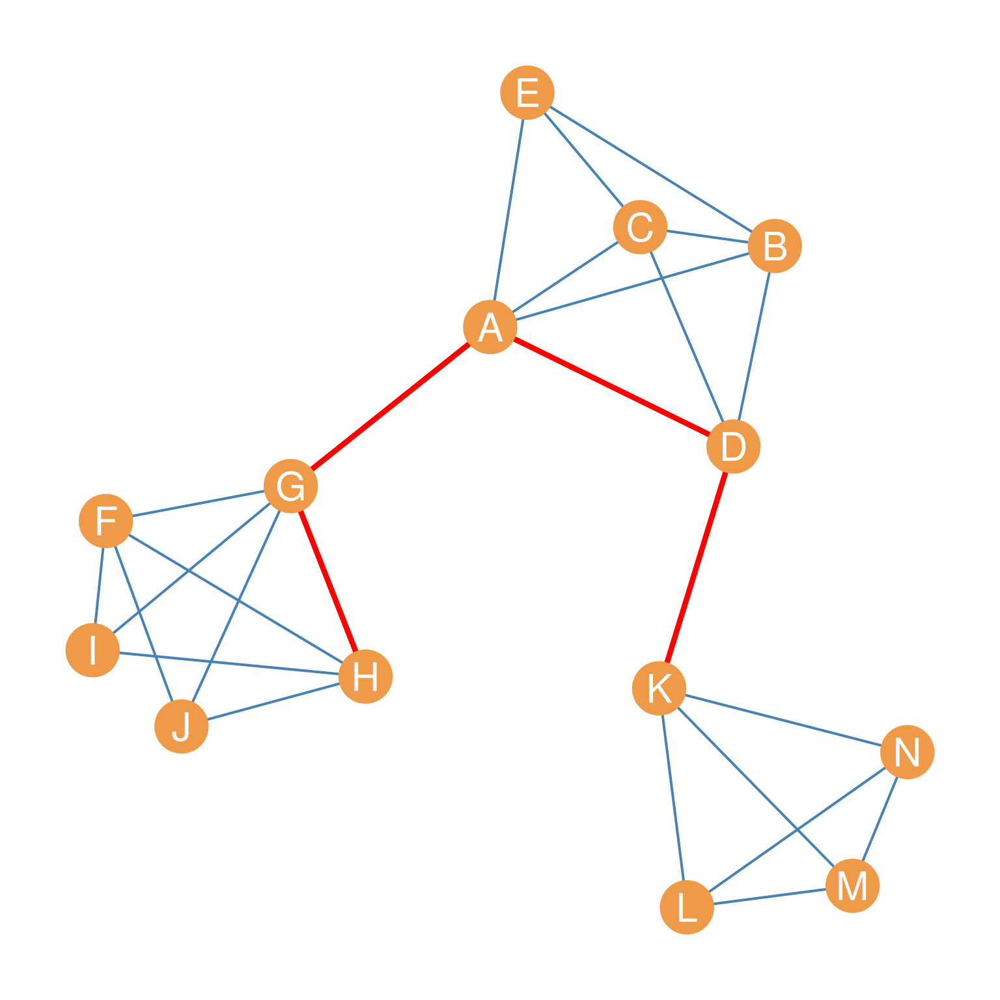
For instance, in Figure 11.5 (a), consider the nodes \(H\) and \(K\). The edge \(HK\) (pictured in purple) is a local bridge of degree 4 for this pair. The reason for that is that, as shown in Figure 11.5 (b), when the edge \(HK\) is removed from the graph, the shortest path between nodes \(H\) and \(K\) increases from \(l_{HK} =1\) (\(H\) and \(K\) are adjacent in Figure 11.5 (a)) to \(l_{HK} = 4\), as given by the path \(H-G-A-D-K\) (pictured in red).
Note that from the perspective of nodes \(D\) and \(H\), the purple \(HK\) edge is a local bridge of degree three, because \(l_{DH} = 2\) in Figure 11.5 (a) and \(l_{DH} = 3\) when the edge \(HK\) is removed from the graph in Figure 11.5 (b).
11.6 Connectivity in Directed Graphs
Connectivity in directed graphs (digraphs) is more complex than in undirected graphs. Because edges have directionality, the fact that node \(u\) can reach node \(v\) does not guarantee that node \(v\) can reach node \(u\) (as we saw in Section 10.8).
To account for this asymmetry, graph theory distinguishes between two different types of connectivity for directed graphs: weak connectivity and strong connectivity.
11.6.1 Weakly Connected Graphs
A directed graph is weakly connected if the graph is connected when we completely ignore the direction of the arrows (replacing all directed arcs with simple undirected edges).
In other words, if the underlying undirected graph is connected, the digraph is weakly connected. Under this definition, even if some nodes cannot reach other nodes due to opposing arrow directions, they are still considered part of the same weakly connected structure.
11.6.2 Strongly Connected Graphs
A directed graph is strongly connected if there exists a directed path from every node to every other node in the graph. This means that for any pair of nodes \(u\) and \(v\), \(u\) can reach \(v\) (\(u \rightarrow v\)) and \(v\) can reach \(u\) (\(v \rightarrow u\)) via directed paths of some finite length.
Let’s apply these definitions to the simple directed graph shown in Figure 9.1 (from Chapter 9): - Is it strongly connected? No. For example, node \(C\) is a receiver node with \(k_{out} = 0\). Since it has no outgoing connections, once you reach \(C\), you cannot get to any other node in the graph. Likewise, node \(E\) has \(k_{in} = 0\), meaning no other node can ever reach \(E\). Thus, it is not strongly connected. - Is it weakly connected? Yes. If we replace all directed arrows in Figure 9.1 with simple undirected lines, we get a single, fully connected undirected graph where every node can reach every other node.
11.6.3 Directed Components
Just as undirected graphs are divided into connected components, directed graphs can be decomposed into:
- Weakly Connected Components (WCCs): Subgraphs that are connected when we ignore edge direction.
- Strongly Connected Components (SCCs): Subgraphs within which every node is mutually reachable from every other node.
Decomposing Figure 9.1 yields: * One Weakly Connected Component: All nodes \(\{A, B, C, D, E, F, G\}\) are part of a single, unified WCC. * Four Strongly Connected Components: 1. The close-knit core of mutually reachable nodes: \(\{A, B, D, F\}\). Within this subgraph, you can trace a directed path from any node to any other node (e.g., \(A \rightarrow F \rightarrow A\), and \(B \leftrightarrow D\)). 2. The singleton receiver component: \(\{C\}\). 3. The singleton transmitter component: \(\{E\}\). 4. The singleton transmitter component: \(\{G\}\).
Decomposing networks into strongly and weakly connected components has powerful applications. For example, in an information flow or gossip network, a strongly connected component represents a “rumor mill” where information can diffuse rapidly and completely to all members. On the other hand, nodes outside the SCC (like receivers or transmitters) either act as pure information sinks or pure information sources.